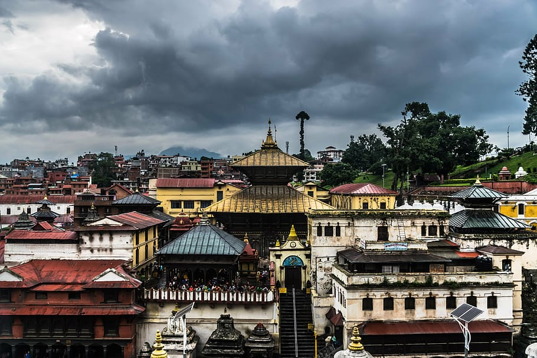
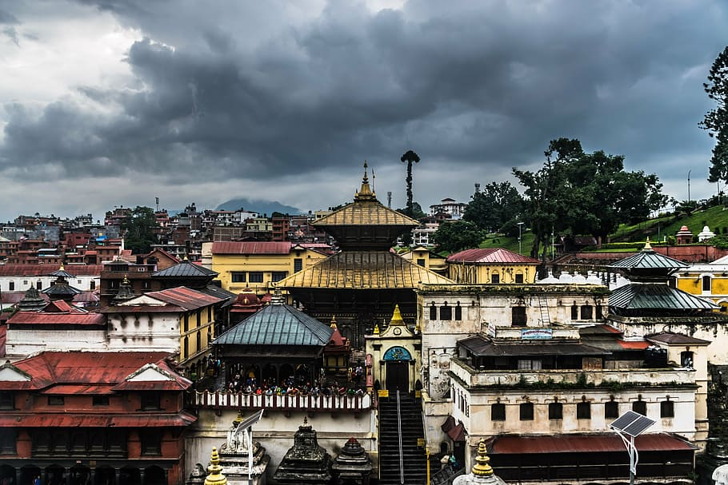

Nepal men's national cricket team


The Nepal men's national cricket team (Nepali: नेपाल पुरुष राष्ट्रिय क्रिकेट टोली) represents the country of Nepal in International cricket and is governed by the Cricket Association of Nepal (CAN). They have been Associate Member of the International Cricket Council (ICC) since 1996. Nepal were awarded Twenty20 International (T20I) status by the ICC in June 2014 until the 2015 ICC World Twenty20 Qualifier and earned One Day International (ODI) status in 2018.
Beginnings:
Over time, cricket came to be considered a gentleman's sport, and involvement was limited mainly to the ruling Rana family and other members of the Nepali elite.
In 1946, the Cricket Association of Nepal was formed to promote cricket amongst the aristocracy. After the introduction of democracy through the Revolution of 1951, cricket began to spread to the rest of the population. In 1961, in an effort to promote cricket to the whole of Nepal, the Cricket Association of Nepal became part of the National Sports Council. Nevertheless, the National games tended to be limited to Kathmandu Valley until the 1980s.
ICC membership:
Improvements to communications and transport infrastructure in Nepal allowed the game to expand outside Kathmandu in the 1980s and Nepal became an Affiliate Member of the International Cricket Council in 1988. A major development program was begun in the early 1990s, which saw regional and district tournaments being established and the increased promotion of cricket in schools.
The local population's interest in cricket increased quickly, and the demand to play was such that restrictions had to be placed on the number teams in several tournaments until more facilities could be built in the mid-1990s. Nepal became an Associate Member of the International Cricket Council on February 2, 1996, which was the year the national side played for the first time in the 1996 ACC Trophy in Kuala Lumpur.
By 1998, the facilities in Nepal had improved sufficiently to allow them to host that year's ACC Trophy at grounds in Lalitpur and Kirtipur (at TU Cricket Ground) and Kathmandu.
Currently, the country has one of the best fan followings among ICC Associate Members. It lost for three years its governing body, the Cricket Association of Nepal (CAN) which was suspended by the International Cricket Council (ICC) due to unnecessary government interference in 2016, but it was reinstated in October 2019.
Present:
In early February 2023, just before the home series against the table-topper Scotland and table-third ranked Namibia, Nepal hired Monty Desai as the head coach of the national team. In mid-February of that year, Nepal hosted a 4 match ODI series for the eleventh round of the 2019–2023 ICC Cricket World Cup League 2 to play 2 matches each against Namibia and Scotland at the Tribhuvan University International Cricket Ground in Kirtipur. Nepal played its first match against Namibia winning by 2 wickets with 14 balls remaining. Kushal Bhurtel was the player of the match for his maiden ODI century (115 off 113). Captain Rohit Paudel also scored 72 off 76 and bowlers Karan KC and Sandeep Lamichhane took 5 and 3 wickets respectively. Nepal won its second game of the series against Scotland by 3 wickets with 18 balls remaining. All-rounder Dipendra Singh Airee was the player of the match for his all-round performance of 85 not out of 116 balls and 1 for 25 in 5 overs. Kushal Malla also scored a rapid 81 off 67 balls and bowler Sandeep Lamichhane took 3 wickets in the match. Nepal won its third game of the series as well at home soil against Namibia, winning by 3 wickets with 15 balls remaining. Opener Aasif Sheikh won the player of the match award for his exceptional batting display of 81 off 98 balls. Gyanendra Malla and Kushal Malla also scored half centuries scoring 65 and 62 runs respectively. On the bowling side, leg-spinner Sandeep Lamichhane took 3 wickets in the match. The last match of the home-series was against Scotland which Nepal won again by beating the table-topper Scotland by 2 wickets with 35 balls remaining.[139] Captain Rohit Paudel won the player of the match award for his critical contribution of 95 runs in 101 balls. Bowlers Sandeep Lamichhane and Karan KC took 4 and 3 wickets each. Karan KC's death over batting (31 of 37) partnership with Rohit for the ninth wicket was vital for the team's result.
In late February, soon after the home series, national team travelled to Dubai for the 4 match ODI series against the United Arab Emirates and the Papua New Guinea. It was for the twelfth round of the 2019–2023 ICC Cricket World Cup League 2. Nepal beat PNG in the first match by 4 wickets with 28 balls remaining. Kushal Bhurtel was the man of the match for his 56 off 69. Fast bowler Gulsan Jha took 3 wickets and his duo-fast bowler Pratis GC made an ODI debut for Nepal (Cap 37). Spinner Sandeep Lamichhane was not in the playing 11 in the match as he was waiting for the supreme-court's decision to allow him to leave the country. The next match was against the home side UAE. Sandeep was allowed to travel to UAE where he joins the team in replacement for the injured Mousom Dhakal to play against the home side. Despite his 3 wickets haul, and batting of 26* of 24, Nepal lost its match by 68 runs. Kushal Malla also scored a rapid-fire half-century (60 off 53) in the match. Nepal beat PNG by 3 wickets with 12 balls remaining in the third match of the series. Aasif Sheikh was the player of the match for his batting knock of 86* of 130 balls. Sandeep Lamichhane's unbroken 50 run partnership with Aasif Sheikh for the eighth wicket was crucial in the match. Nepal beat UAE by 42 runs in the final match of the series. Bhim Sharki won the player of the match for his 70 runs of 99 balls. Bowlers Sompal Kami and Dipendra Singh Airee took 3 wickets in the match.
The thirteenth and final round of the 2019–2023 ICC Cricket World Cup League 2 was to be held in Nepal, between team Nepal, the UAE, and the PNG.[146] Nepal played its first home match of the series against the PNG winning by 52 runs.[147] In the match, Opener Aasif Sheikh scored his maiden ODI century scoring 110 runs a ball and won the player of the match award. Bowler Sandeep Lamichhane took 4 wickets in the game. Nepal won the second game as well beating UAE by massive 177 runs. Rohit Paudel won the man of the match for his crucial knock of 77 runs in 112 balls and spinner Lalit Rajbanshi took 5 wickets in the match. With this win, Nepal won 9 of their 10 games in the league 2 and regained the ODI status for next 5 years.
Nepal played its third game of the home series against the PNG. Nepal won the match by 9 wickets with 254 balls remaining. Leg-spinner Sandeep Lamichhane was the man of the match for his third ODI 5-wicket haul for Nepal. Nepal bundled PNG for 95 runs and chased down the total in 7.4 overs, thanks to unbeaten knock of Aasif Sheikh's 21 ball 53* runs. With this win, Nepal now needed just a win in next match against the UAE to directly qualify for the World cup qualifiers 2023 to be held in Zimbabwe later in the year.
On March 16, 2023, Nepal played its final and must-win match against the UAE under the Bad light-affected game. Nepal won the match by 9 runs due to DLS method. Nepal had to chase down the highest total to be chased down by Nepali side in ODI, a massive target of 311 runs. Thanks to half-century contributions by Kushal Bhurtel(50), Bhim Sharki(67), Aarif Sheikh(52), and Gulsan Jha(50*), Nepal was 269/6 in 44 overs winning the match by 9 runs due to DLS method. With this win, Nepal finished 3rd out of 7 teams in the 2019–2023 ICC Cricket World Cup League 2, and qualified automatically for the 2023 Cricket World Cup Qualifier in Zimbabwe to be held in June 2023.[citation needed] It was Nepal's 11 must-win victories in the last 12 remaining games in the series to achieve the landmark.
On June 18, 2023, Nepal played their first ODI against a full member nation. This was the first match of the 2023 Cricket World Cup Qualifier, Nepal faced Zimbabwe in the Harare Sports Club, Harare. Zimbabwe won the toss and opted to field first. Kushal Bhurtel and Aasif Sheikh stitched the highest opening and overall partnership of 171 for Nepal in ODIs. Bhurtel top-scored with a score of 99 (95), Nepal posted a total of 290/8 in 50 overs. In the second innings, Sompal Kami and Gulshan Jha picked the wickets of the Zimbabwean openers. However, courtesy Craig Ervine and Sean Williams' centuries Zimbabwe defeated Nepal by 8 wickets.
Canada Tour of Nepal 2024
On February 8, 2024, Nepal asserted its dominance in a spectacular cricket series against Canada at the Tribhuvan University Ground. The first ODI witnessed an outstanding performance, with Captain Rohit Paudel's career-best figures of 4-22 leading Nepal to a triumphant 7-run victory. Continuing their stellar form, on February 10, 2024, Nepal achieved a historic milestone, chasing down a target of 286 runs in the second ODI, thanks to the collective efforts of Paudel, Anil Sah, and Dev Khanal, securing a remarkable four-wicket win and tying the national record for the most successful run chase.
The series concluded on February 12, 2024, with a resounding 9-wicket victory in the third ODI. Anil Sah and Bhim Sharki delivered outstanding centuries, guiding Nepal to a comprehensive win and sealing a clean sweep. Notably, Nepal's exceptional performance in Kirtipur extended their winning streak to 15 consecutive ODIs, making it the fourth-longest home winning streak in men's ODI history. As Nepal gears up for the trilateral CWC League 2 series, their formidable display, particularly Sah's standout performances, positions them as a force to be reckoned with in the global cricketing arena.
Pashupatinath Temple
 


The Pashupatinath Temple is a Hindu temple dedicated to Pashupati, a form of Shiva, and is located in Kathmandu, Nepal near the Bagmati River. This temple was classified as a World Heritage Site in 1979. This "extensive Hindu temple precinct" is a "sprawling collection of temples, ashrams, images and inscriptions raised over the centuries along the banks of the sacred Bagmati river", and is one of seven monument groups in UNESCO's designation of Kathmandu Valley.
The centerpiece of the modern complex is the two-story gilt-roofed pagoda, but there are more than 500 other temples shrines, and cremation sites in the immediate vicinity, access to many of which may be gained along the ornately paved riverbank.
The Pashupatinath Temple is at its busiest during the Maha Shivaratri festival—“the great night of Shiva” celebrated annually in February or early March to mark the start of spring—but the area is crowded year-round with tourists and pilgrims. Some of the latter want their lives to end here and are cremated here so that they may be purified by the sacred waters of the Baghmati.
Pashupatinath is the most important temple dedicated to god Shiva. Every year this temple attracts hundreds of elderly followers of Hinduism.
They arrive here to find shelter for the last several weeks of their lives, to meet death, be cremated on the banks of the river and travel their last journey with the waters of the sacred river Bagmati, which later meets the holy river Ganges. Hinduists from every corner of Nepal and India are arriving here to die.
It is believed that those who die in Pashupatinath Temple are reborn as a human, regardless of any misconduct that could worsen their karma. The exact day of their death is predicted by astrologers of the temple. If you are attracted to the places where the spirit of death can be felt, then consider Pashupatinath as your first destination. It is a temple with special atmosphere of death; death is present in almost every ritual and every corner of it.
The main temple of Pashupatinath is a building with a bunk roof and a golden spire.
It is located on the Western bank of Bagmati and is considered a masterpiece of Hindu architecture.
It is a cubic construction with four main doors, all covered with silver sheets.
The two-storied roof is made from copper and is covered with gold. This richly decorated temple with wooden sculptures is believed to make wishes come true. One of the most astonishing decorations of the temple is the huge golden statue of Nandi – Shiva’s bull.
Only followers of Hinduism can enter the main temple, but all the other buildings are available for foreigners to visit. From the Eastern bank of the river the main temple can be seen in its whole beauty. The western bank of Bagmati also hosts the so called Panch Deval (Five temples) complex, which once was a holy shrine but now serves a shelter for destitute old people.
Numerous religious buildings are also located on the eastern bank of Bagmati, most of them are devoted to Shiva. The majority of these buildings are small single storey constructions made from stone. From the outside these buildings are reminding crypts, but in reality these are sacral buildings, created for holding the symbol of the deity Shiva – lingam (erect phallus). Lingams can be found all over the complex.
Along the right bank of Bagmati numerous platforms for funeral pyres are built. The cremations on these platforms are a common activity.
Usually tourists have the chance to see at least one open-air cremation.
The majority of religious rituals are culturally unusual and even mind-blowing for Westerners, but probably the most culturally unusual thing in Pashupatinath is the specific smell of cremated bodies. Unlike any expectation the smell has nothing in common with the smell of decaying flesh, but rather reminds the smell of clabber mixed with different spices.
Another culturally shocking thing in Pashupatinath is the image of local women washing clothes downstream the river. The waters of Bagmati contain animal fat because of the ashes of cremated Shiva followers and easily wash the dirt from linen. It is believed that this is how the soap was invented.
As far as Shiva is considered the patron of animals and all living organisms, monkeys and deers are wandering all around the temple complex on both banks of Bagmati. Monkeys are very often unfriendly, they beg for food, snatch things from careless tourists and may even be dangerous.
It is also very common to meet sadhus in Pahsupathinath.
Sadhus are wandering ascetic yogis, who are trying to acquire liberation from the cycle of death and rebirth by meditating.
They have very unique appearance with specific yellow paintings on their bodies.
Majority of sadhus are very tourist friendly and eager to pose for the photos with foreigners, but it is not free of charge. They live in caves or tiny cells on the territory of Pashupatinath. Sadhus have extremely ascetic and even miserable life but for a Westerner their independent and unconstrained behavior looks mysterious.
Mt.Everest


Mount Everest is a peak in the Himalaya mountain range. It is located between Nepal and Tibet, an autonomous region of China. At 8,849 meters (29,032 feet), it is considered the tallest point on Earth. In the nineteenth century, the mountain was named after George Everest, a former Surveyor General of India. The Tibetan name is Chomolungma, which means “Mother Goddess of the World.” The Nepali name is Sagarmatha, which has various meanings.
The first ever recorded people to climb Everest were Edmund Hillary (a mountaineer from New Zealand) and his Tibetan guide Tenzing Norgay. They climbed the mountain in 1953 and hold the record together. The first records of Everest’s height came much earlier, in 1856. British surveyors recorded that Everest was the tallest peak in the world in their Great Trigonometrical Survey of the Indian subcontinent.
The Himalayan mountains have long been home to indigenous groups living in the valleys. The most famous of these are the Sherpa people. The word “Sherpa” is often used to mean mountain guide, though it actually refers to an ethnic group. The Sherpa have valuable experience in mountain climbing, which they can provide to other climbers. Most climbs of Everest would be impossible without the Sherpas’ logistical help and knowledge. However, their way of life extends beyond helping Everest climbers. Traditionally, their lifestyle has consisted of farming, herding, and trade. And, because they live at such a high altitude year round, they are accustomed to the low oxygen levels.
Climbing Mount Everest has become a popular expedition for mountain climbers. However, it is a dangerous undertaking. Climbing Everest requires a lot of experience mountaineering elsewhere, as well as a certificate of good health, equipment, and a trained Nepalese guide. The snow and ice on the mountain create deadly hazards like avalanches, and there is only a limited climbing season due to bad weather conditions. But perhaps the biggest danger is the altitude. Most climbers are not accustomed to the high altitude and low oxygen levels and rely on bottled oxygen they bring along. This is why the area above 8,000 meters (26,000 feet) elevation on Everest is called the “death zone.” Climbers who spend long periods in this region can develop altitude sickness and even brain swelling.
Mount Everest’s climbing industry has become controversial. As popularity of the climb has increased, there have been more “traffic jams” as climbers spend too much time in the death zone waiting for their chance to go to the summit. With more people has also come more pollution up near the summit as climbers often discard unwanted items all along the mountain. Additionally, the Sherpa people have been exploited by climbers, and their traditional way of life has been disrupted by foreign climbers. Sherpa guides are faced with some of the highest death rates of any field of employment, for comparatively little pay. Most disturbingly, because many climbers have died along the way, and their bodies are impossible to retrieve, climbers must frequently travel past corpses as they make their way up the mountain.
Rhododendron


This Rhododendon was planted by the Nepalese Ambassador during his visit in 2010 and it’s a symbol of the long connection that our Botanic garden has with Nepal, stretching back to 1802. Rhododendron arboreum is called Lali gurans in Nepali, and is Nepal’s much-loved national flower. Its bright red flowers are a welcome sign of spring and people go sightseeing in the hills to see the flowering trees and villagers collect the flowers to sell to passing travellers and for urban markets. Flowers are offered at temples and decorate houses, and young girls and ladies like to wear them in their hair.
In the midhills the flowers are deep red, but at higher altitudes they are paler, almost white, and the undersides of the leaves turn rusty brown. It’s the higher altitude forms that we can grow in Edinburgh’s cool climate, so you will have to travel to Nepal to see the magnificent lowland trees covered in blood red blooms. The flowers can be eaten, made into pickles, dried for tea, and even chewed to treat dysentery – but you need to make sure you have the right species of Rhododendron, as some Rhododendrons have poisonous nectar. Other parts of the plant are used for a wide range of purposes. A fish poison can be made from the young leaves, and the juice is sprinkled on mattresses to kill bed bugs. The hard, durable, fine-grained wood is prized for making bowls, spoons and furniture, and when it’s burnt, it provides long-lasting heat, and so it is extensively used for firewood and to produce charcoal.
Rhododendrons are being lost from the wild because of the over-collection of wood and habitat degradation. Nepal’s national flower is also an indication of climate change, as people in Kathmandu are noticing that the flowers appear earlier each year, and studies of annual growth rings (dendrochronology) of old Rhododendron trees at high altitude are revealing the impact of climate change dating back many decades.
It may be used as medication. when soaking it, completely different sorts of medication are created. Once dry, the dirt from this flower helps soften bones. inline with a common belief in an Asian country, a sip of the juice of the Lali Gurans flower dissolves fish bones stuck within the throat. It conjointly helps to cure those patients UN agency area unit tormented by infectious disease. The dirt of this flower ought to be mixed with the starch of the boiling rice and given to the patient.
It is the foremost beloved flower of Nepalese. everybody respects this flower, thinking of it as a national image. it’s more deserved and no flaws. Lali Gurans is that the hero among all flowers in an Asian country. It does not solely decorate the forest, however conjointly decorates the country of Asian country still.
Gosaikunda Lake
Gosaikunda, also spelled Gosainkunda, is an alpine freshwater oligotrophic lake in Nepal's Langtang National Park, located at an elevation of 4,380 m (14,370 ft) in the Rasuwa District with a surface area of 13.8 ha (34 acres). Together with associated lakes, the Gosaikunda Lake complex is 1,030 ha (2,500 acres) in size and was designated a Ramsar site on 29 September 2007. The lake melts to form the Trishuli River; it remains frozen for six months in the winter October to June. There are 108 lakes in the vicinity. The Lauribina La pass at an elevation of 4,610 m (15,120 ft) is on its outskirts
The Gosaikunda area has been delineated as a religious site. Hindu mythology attributes Gosaikunda as the abode of the Hindu deities Shiva and Gauri. The Hindu scriptures Bhagavata Purana, Vishnu Purana and the epics Ramayana and Mahabharata refer to Samudra manthan, which is directly related to the origin of Gosaikunda. Its waters are considered holy and of particular significance during the Gangadashahara and the Janai Purnima festivals when thousands of pilgrims from Nepal and India visit the area.
According to legend the spring that feeds the pond in the Kumbheshwar temple complex in Patan is connected to Gosaikunda. Therefore, those who cannot make the long journey to the lake, visit Kumbeshwar Pokhari instead.Among the Newars Gosaikunda is known as Silu. As such it is the subject of a song and a 1987 film inspired by that song.
Geographical details:
Gosaikunda is situated in the Langtang National Park at a height of 4,380 meters above sea level. The lake is a picturesque location because it is bordered by untamed land and snow-capped mountains. The lake receives water from numerous small streams and glaciers, which helps to explain why its waters are so pristine.
Tourism Attractions Nearby:
Throughout the trek, you can stop at a number of tourist destinations that are close to Gosaikunda. The adjacent Langtang Valley is a stunning valley encircled by lofty hills and glaciers. Another well-liked tourist destination is the Buddhist monastery known as Kyanjin Gompa, which is situated in the Langtang Valley. The Helambu region, renowned for its scenic beauty and cultural richness, is another neighboring attraction.
Directions from Kathmandu:
The Gosaikunda walk begins in the town of Dhunche, 130 kilometers from the capital. The walk from Dhunche to Gosaikunda takes roughly 6-7 days. Trekkers have the chance to experience the local culture and customs as they pass through a number of villages, woods, and mountain passes.
Things to consider doing while you’re here:
Take a swim in the sacred waters of Gosaikunda. Visit the Kyanjin Gompa and learn about the local Buddhist culture. Enjoy the breathtaking Himalayan views as you hike through the Langtang Valley and sample the traditional fare, which includes momos, thukpa, and yak cheese.
For those looking for a distinctive cultural and natural experience, We recommend that Gosaikunda should be on your travel itinerary. It is a memorable location due to its religious significance, spectacular views, and difficult walking trails. Gosaikunda should be on your trip wish list whether you’re a devoted Hindu, a curious traveler, or an adventure seeker.